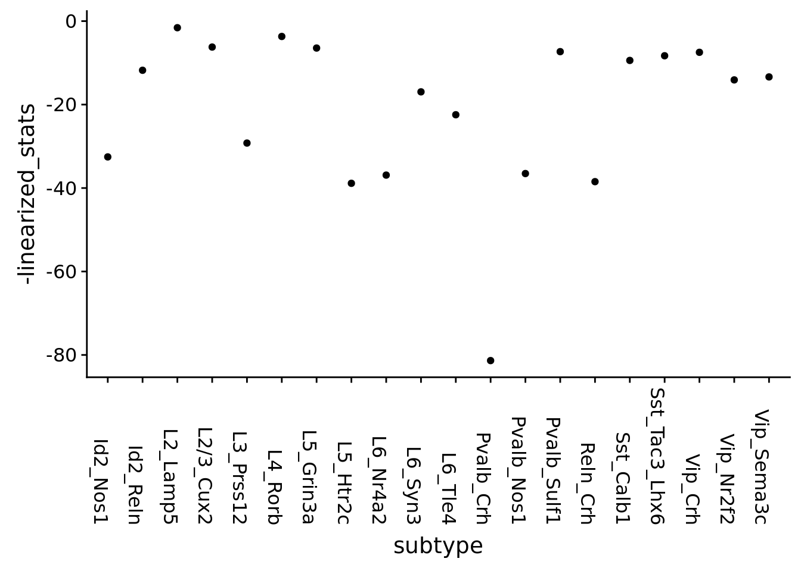
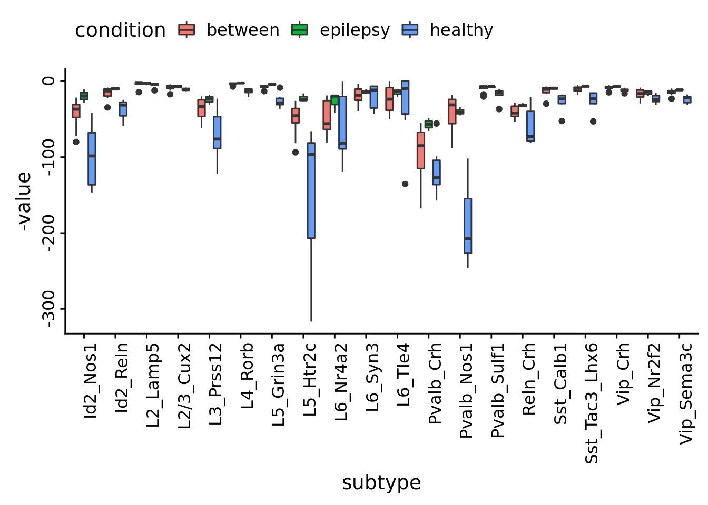

Last updated: 2019-05-29
Checks: 6 0
Knit directory: SecretUtils/
This reproducible R Markdown analysis was created with workflowr (version 1.3.0). The Checks tab describes the reproducibility checks that were applied when the results were created. The Past versions tab lists the development history.
Great! Since the R Markdown file has been committed to the Git repository, you know the exact version of the code that produced these results.
Great job! The global environment was empty. Objects defined in the global environment can affect the analysis in your R Markdown file in unknown ways. For reproduciblity it’s best to always run the code in an empty environment.
The command set.seed(20190415) was run prior to running the code in the R Markdown file. Setting a seed ensures that any results that rely on randomness, e.g. subsampling or permutations, are reproducible.
Great job! Recording the operating system, R version, and package versions is critical for reproducibility.
Nice! There were no cached chunks for this analysis, so you can be confident that you successfully produced the results during this run.
Great! You are using Git for version control. Tracking code development and connecting the code version to the results is critical for reproducibility. The version displayed above was the version of the Git repository at the time these results were generated.
Note that you need to be careful to ensure that all relevant files for the analysis have been committed to Git prior to generating the results (you can use wflow_publish or wflow_git_commit). workflowr only checks the R Markdown file, but you know if there are other scripts or data files that it depends on. Below is the status of the Git repository when the results were generated:
Ignored files:
Ignored: .Rhistory
Ignored: .Rproj.user/
Untracked files:
Untracked: .Rbuildignore
Untracked: NAMESPACE
Untracked: R/hello.R
Untracked: analysis/all.panels.pdf
Untracked: analysis/cell_type_total_tSNE.w.pdf
Untracked: analysis/fraction.all.pdf
Untracked: analysis/jensen_shannon_stuff.Rmd
Untracked: analysis/make_scanpy_viktor.R
Untracked: analysis/paga.Rmd
Untracked: analysis/subtype_distances.Rmd
Untracked: analysis/subtype_distances2.Rmd
Untracked: analysis/subtype_distances4.Rmd
Untracked: analysis/subtype_distances_redux.Rmd
Untracked: analysis/subtype_distances_revenge.Rmd
Untracked: analysis/test_output.Rmd
Untracked: analysis/transmute_peters_code.Rmd
Untracked: docs/figure/jensen_shannon_stuff.Rmd/
Untracked: docs/figure/paga.Rmd/
Untracked: man/
Unstaged changes:
Modified: analysis/subtype_distances3.Rmd
Modified: analysis/transmute_code_eps.Rmd
Note that any generated files, e.g. HTML, png, CSS, etc., are not included in this status report because it is ok for generated content to have uncommitted changes.
There are no past versions. Publish this analysis with wflow_publish() to start tracking its development.
library(conos)Loading required package: MatrixLoading required package: igraph
Attaching package: 'igraph'The following objects are masked from 'package:stats':
decompose, spectrumThe following object is masked from 'package:base':
unionlibrary(pheatmap)
#library(fuck)
devtools::load_all('/home/larsc/SecretUtils')Loading SecretUtilsLoading required package: magrittrLoading required package: reshape2require(pagoda2)Loading required package: pagoda2library(dplyr)
Attaching package: 'dplyr'The following objects are masked from 'package:igraph':
as_data_frame, groups, unionThe following objects are masked from 'package:stats':
filter, lagThe following objects are masked from 'package:base':
intersect, setdiff, setequal, unionlibrary(stringr)
library(tidyr)
Attaching package: 'tidyr'The following object is masked from 'package:reshape2':
smithsThe following object is masked from 'package:magrittr':
extractThe following object is masked from 'package:igraph':
crossingThe following object is masked from 'package:Matrix':
expandlibrary(ggplot2)
library(cowplot)
Attaching package: 'cowplot'The following object is masked from 'package:ggplot2':
ggsavelibrary(igraph)
con <- readRDS(file.path('/home/larsc/data/10x_preproced_graphed.rds'))
annot <- readRDS(file.path('/home/demharters/R/projects/UPF9_14_17_19_22_23_24_32_33/metadata_10x_final.rds'))annot <- annot %>% mutate(cellids = rownames(annot)) # turn rownames into a col for convenience
annot <- annot %>% mutate(subtype_condition = paste(annot$subtype, annot$condition, sep='_'))
annot <- annot %>% mutate(subtype_sample = paste(annot$subtype, annot$sample, sep='-'))
conos_distances <- Matrix::readMM('/home/larsc/data/scan_stuff/graph_distances.mtx')mem_levels <- factor(annot$subtype_sample) %>% levels
subtype_order <- gsub(".*-","", mem_levels) %>% unique
subtype_order2 <- (paste0(annot$subtype) %>% unique)[order(paste0(annot$subtype) %>% unique)]
membership_vec <- as.numeric(factor(annot$subtype_condition))
membership_vec_subsamp <- as.numeric(factor(annot$subtype_sample))Paga statistics, subtype-condition
#source("/d0/home/larsc/SecretUtils/R/graph_stuff.R")
connectivities <- GetPagaMatrix(conos_distances, membership_vec, scale=F)
linearized_stats <- seq(1, dim(connectivities)[1], 2) %>% sapply(function(i){connectivities[i,i+1]})
paga_df <- bind_cols(value=linearized_stats, subtype=subtype_order2)
ggplot(paga_df, aes(y=-linearized_stats, x=subtype)) +geom_point()+
theme(axis.text.x = element_text(angle = -90, hjust = 1))
Let’s incorporate the samples
connectivities <- GetPagaMatrix(conos_distances, membership_vec_subsamp, scale=F)
GenerateFactorVectors <- function(subtype.vector, sample.vector, condition.vector) {
conc <- paste0(subtype.vector, "-;;-", sample.vector, ";__;" , condition.vector) %>% as.factor %>% levels
subtypes <- gsub("-;;-.*", "", conc)
samples <- gsub(".*-;;-", "", conc)
samples <- gsub(';__;.*', "", samples)
condition <- gsub('.*;__;', "", conc)
return(bind_cols(subtypes=subtypes, samples=samples, condition=condition, concatenated=conc))
}
factor_vectors <- GenerateFactorVectors(annot$subtype, annot$sample, annot$condition)
sub_cond_indices <- as.factor(factor_vectors$concatenated) %>% as.numeric %>%
split(list(factor_vectors$subtypes, factor_vectors$condition))
sub_cond_indices <- sub_cond_indices[order(sub_cond_indices %>% names)]
sub_samp_factor <- as.factor(factor_vectors$samples) %>%
split(list(factor_vectors$subtypes, factor_vectors$condition))
sub_samp_factor <- sub_samp_factor[order(sub_samp_factor %>% names)]
sub_cond_factor <- as.factor(factor_vectors$condition) %>%
split(list(factor_vectors$subtypes, factor_vectors$condition))
sub_cond_factor <- sub_cond_factor[order(sub_cond_factor %>% names)]
GetSubConnectivity <- function(indices1, indices2, connectivity.matrix){
return(connectivity.matrix[indices1, indices2])
}
factor1_mats <- seq(1, length(sub_cond_indices), 2) %>%
lapply(function(i){sub.mat <- GetSubConnectivity(sub_cond_indices[[i]], sub_cond_indices[[i]], connectivities);
rownames(sub.mat) <- sub_samp_factor[[i]]; colnames(sub.mat) <- sub_samp_factor[[i]]; return(sub.mat)})
names(factor1_mats) <- factor_vectors$subtypes %>% as.factor %>% levels
factor2_mats <- seq(2, length(sub_cond_indices), 2) %>%
lapply(function(i){sub.mat <- GetSubConnectivity(sub_cond_indices[[i]], sub_cond_indices[[i]], connectivities);
rownames(sub.mat) <- sub_samp_factor[[i]]; colnames(sub.mat) <- sub_samp_factor[[i]]; return(sub.mat)})
names(factor2_mats) <- factor_vectors$subtypes %>% as.factor %>% levels
between_mats <- seq(1, length(sub_cond_indices), 2) %>%
lapply(function(i){sub.mat <- GetSubConnectivity(sub_cond_indices[[i]], sub_cond_indices[[i+1]], connectivities);
rownames(sub.mat) <- sub_samp_factor[[i]]; colnames(sub.mat) <- sub_samp_factor[[i+1]]; return(sub.mat)})
names(between_mats) <- factor_vectors$subtypes %>% as.factor %>% levels
factor1_identity <- sub_cond_factor[[1]] %>% unique %>% as.character
factor2_identity <- sub_cond_factor[[2]] %>% unique %>% as.character
MeltMatrix <- function(x, symmetric){
if (symmetric) {
x[lower.tri(x)] <- NA; diag(x) <- NA
df <- na.omit(reshape2::melt(as.matrix(x)))
} else {
df <- reshape2::melt(as.matrix(x))
}
df <- bind_cols(value=df$value, comparison=paste0(df$Var1, '-', df$Var2))
return(df)
}
MeltAndAppend <- function(mat.list, factor.identity, symmetric=TRUE) {
molten.mats <- mat.list %>% lapply(MeltMatrix, symmetric)
AppendCols <- function(df, subtype.name, factor.identity){
df$subtype = subtype.name
df$condition = factor.identity
return(df)
}
extended.dfs <- Map(AppendCols, molten.mats, names(mat.list), MoreArgs=list(factor.identity))
return(extended.dfs)
}
epilepsy_dfs <- MeltAndAppend(factor1_mats, factor1_identity)
healthy_dfs <- MeltAndAppend(factor2_mats, factor2_identity)
between_dfs <- MeltAndAppend(between_mats, 'between', symmetric = FALSE)
(connectivities[1:4, 5:7] %>% as.matrix %>% melt)$value %in% between_dfs[[1]]$value # seems to be true [1] TRUE TRUE TRUE TRUE TRUE TRUE TRUE TRUE TRUE TRUE TRUE TRUEplot_df <- bind_rows(epilepsy_dfs, healthy_dfs, between_dfs)
plot_df %>% ggplot(aes(x=subtype, y=-value ,dodge=condition,fill=condition))+
geom_boxplot() + theme(axis.text.x = element_text(angle = 90, hjust = 1),
axis.text.y = element_text(angle = 90, hjust = 0.5))+
theme(legend.position="top")
sessionInfo()R version 3.5.3 (2019-03-11)
Platform: x86_64-pc-linux-gnu (64-bit)
Running under: Ubuntu 18.04.2 LTS
Matrix products: default
BLAS: /usr/lib/x86_64-linux-gnu/atlas/libblas.so.3.10.3
LAPACK: /usr/lib/x86_64-linux-gnu/atlas/liblapack.so.3.10.3
locale:
[1] LC_CTYPE=en_US.UTF-8 LC_NUMERIC=C
[3] LC_TIME=en_US.UTF-8 LC_COLLATE=en_US.UTF-8
[5] LC_MONETARY=en_US.UTF-8 LC_MESSAGES=en_US.UTF-8
[7] LC_PAPER=en_US.UTF-8 LC_NAME=C
[9] LC_ADDRESS=C LC_TELEPHONE=C
[11] LC_MEASUREMENT=en_US.UTF-8 LC_IDENTIFICATION=C
attached base packages:
[1] stats graphics grDevices utils datasets methods base
other attached packages:
[1] cowplot_0.9.4 ggplot2_3.1.1 tidyr_0.8.3
[4] stringr_1.4.0 dplyr_0.8.0.1 pagoda2_0.1.0
[7] SecretUtils_0.1.0 reshape2_1.4.3 magrittr_1.5
[10] pheatmap_1.0.12 conos_1.0.0 igraph_1.2.4
[13] Matrix_1.2-17
loaded via a namespace (and not attached):
[1] fs_1.2.7 usethis_1.5.0 devtools_2.0.2
[4] RColorBrewer_1.1-2 rprojroot_1.3-2 prabclus_2.2-7
[7] tools_3.5.3 backports_1.1.4 irlba_2.3.3
[10] R6_2.4.0 lazyeval_0.2.2 colorspace_1.4-1
[13] trimcluster_0.1-2.1 nnet_7.3-12 withr_2.1.2
[16] tidyselect_0.2.5 gridExtra_2.3 prettyunits_1.0.2
[19] processx_3.3.0 compiler_3.5.3 git2r_0.25.2
[22] cli_1.1.0 desc_1.2.0 labeling_0.3
[25] triebeard_0.3.0 diptest_0.75-7 scales_1.0.0
[28] DEoptimR_1.0-8 mvtnorm_1.0-10 robustbase_0.93-4
[31] callr_3.2.0 digest_0.6.18 rmarkdown_1.12
[34] base64enc_0.1-3 pkgconfig_2.0.2 htmltools_0.3.6
[37] sessioninfo_1.1.1 rlang_0.3.4 rstudioapi_0.10
[40] shiny_1.3.1 mclust_5.4.3 dendextend_1.10.0
[43] modeltools_0.2-22 Rcpp_1.0.1 munsell_0.5.0
[46] viridis_0.5.1 stringi_1.4.3 whisker_0.3-2
[49] yaml_2.2.0 MASS_7.3-51.3 flexmix_2.3-15
[52] pkgbuild_1.0.3 Rtsne_0.14 plyr_1.8.4
[55] grid_3.5.3 parallel_3.5.3 promises_1.0.1
[58] crayon_1.3.4 lattice_0.20-38 knitr_1.22
[61] ps_1.3.0 pillar_1.3.1 rjson_0.2.20
[64] fpc_2.1-11.1 stats4_3.5.3 pkgload_1.0.2
[67] glue_1.3.1 evaluate_0.13 data.table_1.12.2
[70] remotes_2.0.4 urltools_1.7.3 httpuv_1.5.1
[73] testthat_2.0.1 gtable_0.3.0 purrr_0.3.2
[76] kernlab_0.9-27 assertthat_0.2.1 xfun_0.6
[79] mime_0.6 xtable_1.8-4 later_0.8.0
[82] class_7.3-15 viridisLite_0.3.0 tibble_2.1.1
[85] memoise_1.1.0 workflowr_1.3.0 cluster_2.0.8
[88] Rook_1.1-1 brew_1.0-6